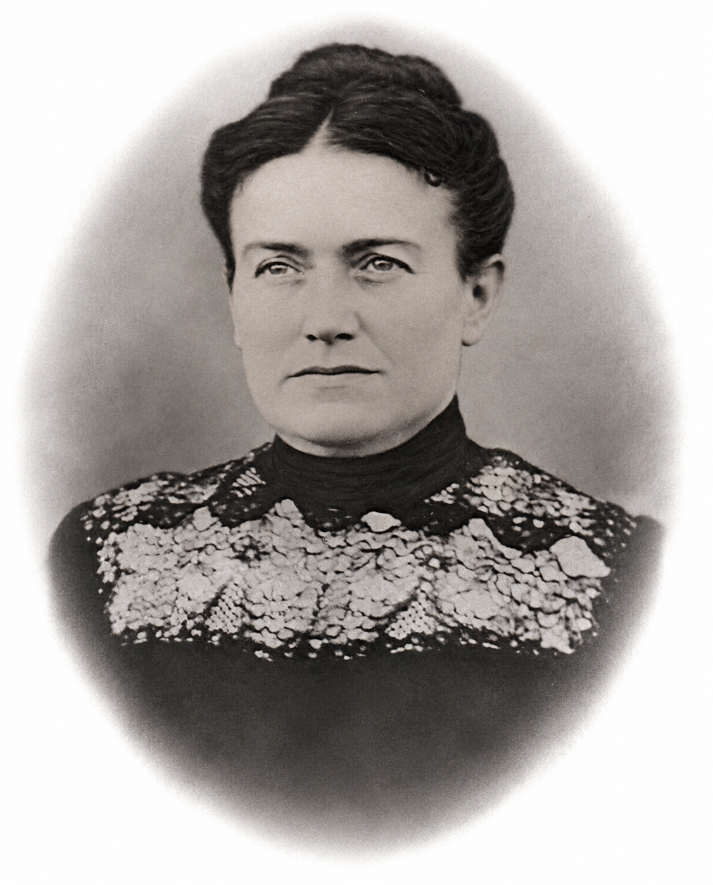

Mary Catherine Wilson
1859–1910

Life Events
Born: 1859
Family
Spouse:
Children
Military Service
No military service information has been added.
Biography
Mary Catherine Wilson (1859–1910) is identified in FamilySearch family-tree research as the wife of James Fairfax Daniel Sr. and the mother of seven children, including Addie Leola Daniel Webster.
Addie's 1922 Baltimore death certificate identifies her mother as Mary C. Wilson and records her birthplace as Somerset County, Maryland. This provides documentary evidence for Addie's maternal relationship.
Family-tree research identifies Mary as a daughter of Samuel David Wilson (1823–1914) and a sister of Lazarus Benjamin Wilson (1857–1922). In 1906, Lazarus and his wife Annie conveyed property on Deals Island, Maryland, to Mary's daughter Addie. The deed documents the transaction, while the precise family relationships require corroboration through additional records.
FamilySearch lists Mary's marriage to James Fairfax Daniel Sr. as December 16, 1875 or 1876. The marriage year remains uncertain pending examination of an original marriage record.
Photos
![Photograph of the former Daniel family residence at 2010 Walbrook Avenue, Baltimore, Maryland, taken in the early 21st century. Mary Catherine Wilson Daniel (1859–1910) was living at this address when she died on October 4, 1910, according to her death notice published in The Baltimore Sun on October 5, 1910. The photograph shows the three-story rowhouse with boarded windows and doors and visible deterioration. The photograph's exact date and the building's subsequent history have not yet been established.](../photos/2010_walbrook_avenue_daniel_family_home.jpg)
Grave & Burial

Sources
-
1875 Marriage Register – James F. Daniel and Mary C. Wilson
Type: marriageHistorical marriage register containing an entry dated November 16, 1875, for James F. Daniel and Mary C. Wilson. The entry provides evidence of their marriage in Somerset County, Maryland. FamilySearch family-tree information previously listed December 16, 1875 or 1876, as their marriage date; the discrepancy should be investigated using the original marriage record and its archival citation.
Location: Somerset County, Maryland, United States
Supports: A marriage-register entry identifies James F. Daniel and Mary C. Wilson as a couple., The entry is dated November 16, 1875., The record places the marriage in Somerset County, Maryland., The marriage-register date differs from the date previously listed in FamilySearch family-tree information.
-
1900 United States Federal Census – James F. and Mary C. Daniel Family
Type: censusThe Twelfth Census of the United States, enumerated June 21, 1900, records James F. Daniel (age 45) and his wife Mary C. Daniel (age 40) in Tangier District, Somerset County, Maryland, Enumeration District 81, sheet 22. Their household, appearing on lines 13–19, includes five children: Isadora F. Daniel (age 19), Kittie W. Daniel (age 16), James F. Daniel (age 14), Annie W. Daniel (age 12), and Wilson B. Daniel (age 2). Their daughter Addie Leola Daniel Webster was already married and appears with her husband Snead Webster in a separate household in the 1900 census.
Location: Tangier District, Somerset County, Maryland, United States
Supports: James F. Daniel and Mary C. Daniel were recorded as husband and wife in 1900., James F. Daniel was recorded as 45 years old., Mary C. Daniel was recorded as 40 years old., Isadora F. Daniel was recorded as their daughter, age 19., Kittie W. Daniel was recorded as their daughter, age 16., James F. Daniel was recorded as their son, age 14., Annie W. Daniel was recorded as their daughter, age 12., Wilson B. Daniel was recorded as their son, age 2., The Daniel family resided in Tangier District, Somerset County, Maryland, in June 1900.
-
1910 Baltimore Death Certificate – Mary Catherine Daniel
Type: death_certificateCertificate of Death issued by the Health Department of the City of Baltimore for Mary Catherine Daniel, who died on October 4, 1910, at age 51. The certificate records her as a married white female and housewife, born in Maryland. Her father is identified as Samuel D. Wilson, reportedly born in South Carolina, and her mother as Sarah E. Evans, reportedly born in Maryland. The informant appears to be Samuel D. Wilson, although the handwriting should be verified. The certificate records burial at Deals Island, Maryland, on October 6, 1910. Her exact birth date is difficult to read and should be verified from a clearer image.
Location: Baltimore City, Maryland, United States
Supports: Mary Catherine Daniel died on October 4, 1910, in Baltimore, Maryland., Her age at death was recorded as 51 years., She was recorded as married., Her birthplace was recorded as Maryland., Her father was identified as Samuel D. Wilson., Her father's birthplace was recorded as South Carolina., Her mother was identified as Sarah E. Evans., Her mother's birthplace was recorded as Maryland., Burial was recorded at Deals Island, Maryland, on October 6, 1910.
-
1910 Death Notice – Mary Catherine Daniel, The Baltimore Sun
Type: newspaperDeath notice published in The Baltimore Sun on October 5, 1910, reporting that Mary Catherine Daniel died on the morning of October 4, 1910, at her residence, 2010 Walbrook Avenue, Baltimore, Maryland. She was 51 years old and identified as the beloved wife of James F. Daniel. The notice states that interment would take place at Deal's Island, Maryland. This newspaper notice corroborates her death date, age, marital relationship, and burial location recorded in her Baltimore death certificate.
Location: Baltimore, Maryland, United States
Supports: Mary Catherine Daniel died on October 4, 1910., She was reported to be 51 years old at her death., Her residence at death was 2010 Walbrook Avenue, Baltimore, Maryland., Her husband was identified as James F. Daniel., Her burial was announced for Deal's Island, Maryland., The death notice appeared in The Baltimore Sun on October 5, 1910.